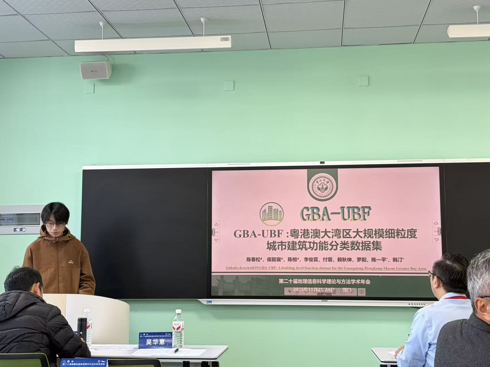

Activities

The 20th Annual Conference on Theories and Methods of Geographical Information Science
- Youth Scholar (Student) Paper Competition: GBA-UBF: A large-scale and fine-grained building function classification dataset in the Greater Bay Area.